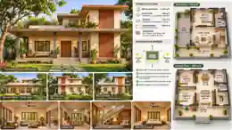

Construction roadmap
Essential ground floor
Two bedrooms, two bathrooms, kitchen, puja and compact living that later becomes dining.
Target: ₹15 lakhDouble-height living
Build the final 22 × 20 ft, 22-ft-high living room and connect it to the permanent dining area.
Indicative: ₹8–12 lakhComplete ground floor
Finish verandah, courtyard edges, circulation, drainage, landscaping and remaining ground-floor connections.
Indicative: ₹5–8 lakhFirst floor
Bedroom 3, family lounge, gym, theatre, gallery/indoor balcony and terrace.
Indicative: ₹22–28 lakhPhase 1 – Essential ground-floor home
Build all essential rooms in their final positions. The compact living room occupies the final dining footprint; later it changes use to dining without moving walls.
Bedroom 1
Approx. 14 × 15 ft; final location and openings.Bedroom 2
Approx. 14 × 15 ft; final location and openings.Bathrooms
Two rooms, each approx. 6 × 9 ft; final plumbing and ventilation.Kitchen
Approx. 14 × 12 ft; southeast zone, exhaust and service routes.Puja room
Approx. 8 × 8 ft; northeast zone as labelled in the master concept.Compact living / future dining
Approx. 14 × 12 ft; same permanent footprint in both stages.Reserved, not built: central courtyard approx. 16 × 16 ft, open to sky; main double-height living room approx. 22 × 20 ft, to be built in Phase 2. Do not occupy these footprints with temporary structures.
Phase 2 – Double-height living room
- Build the final living room in its exact master-plan position.
- Preserve approx. 22-ft clear height and the future gallery relationship.
- No first-floor slab above the double-height void.
- Connect to Phase 1 through openings and lintels/frames detailed in the original drawings.
- Do not cut columns, beams or completed structural walls.
Phase 3 – Complete the ground floor
- Complete verandah and final ground-floor circulation.
- Finish courtyard edges, falls, waterproofing and drainage.
- Keep courtyard open to sky; no permanent roof or slab over it.
- Complete external finishes, landscaping and remaining ground-floor services.
Phase 4 – First floor
Bedroom 3
Approx. 14 × 15 ft.Family lounge
Approx. 18 × 15 ft.Gym
Approx. 12 × 12 ft; verify floor loading and vibration.Home theatre
Approx. 18 × 15 ft; acoustic isolation and ventilation.Gallery / indoor balcony
Overlooks living room and courtyard; engineered guardrails.Terrace
Approx. 14 × 12 ft; waterproofing and drainage.Preserve the open-to-sky courtyard and double-height living room below. Build only on the first-floor slab zones shown in the final coordinated plan.
No-demolition and engineering rules
- Architect to produce the complete final ground and first floors before Phase 1 begins, then mark each phase on those exact plans.
- All future doorways, openings, lintels, beams, temporary closures and construction joints must be designed now.
- Foundations, columns and beams must be engineered for the complete duplex from day one after soil investigation.
- Provide sleeves, capped plumbing branches, cleanouts, electrical conduits, spare circuits and rainwater routes for future phases.
- Do not cut columns, beams, slabs or load-bearing walls later.
- Test owner-supplied mud bricks for strength, absorption and durability; use only where the architect/engineer approves. Do not assume they are load-bearing.
- Design for Sundargarh heat, wind and monsoon: shading, ventilation, roof insulation, waterproofing, gutters and positive site drainage.
- Vastu positions are design intentions; verify actual compass orientation on the surveyed plot. Statutory rules and engineering take priority.
Site and boundary assumptions
Keep approx. 25 ft front open space on the south road side. Agreed boundary concept: 6-ft south fly-ash brick wall with RCC pillars and gates; 4-ft GI wire fencing on east, west and north. Preserve the rear future extension area. Confirm actual plot lines, access and setbacks by licensed survey.
Indicative budget summary
| Phase | Scope | Indicative allowance |
|---|---|---|
| 1 | Essential ground floor | ₹15L target |
| 2 | Double-height living room | ₹8–12L |
| 3 | Ground-floor completion | ₹5–8L |
| 4 | First floor | ₹22–28L |